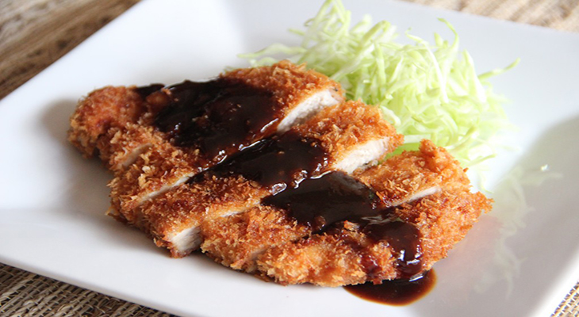

Delicious and Artistic dishes anybody should try in Japan
Posted on March 27, 2018 at 10:09 PM
Japan’s innovation and uniqueness in terms of dishes remains unexcelled. They have become a major culinary destination, thanks to its variety of incredible and culturally loved cuisine. Japanese food is so much more than the infamous sushi! They have the most diverse and unique dishes, manifesting fresh vegetables, all sorts of meats and sea food - raw, cooked or grilled. Choosing what to eat and what dishes must be tried in Japan could be pretty overwhelming. But worry not; we had made a list of top 5 foods that we think any foodie should at least try when visiting Japan.
1. Ramen
Everybody have heard and know what Ramen is, those who say otherwise is probably lying or never have watch an episode of Naruto. Ramen is a superior noodle dish; it is the pride of Japan. You will find Ramen basically all over the country. It is a wheat noodle soup dish that was originally imported from China. Typically served in a meat-based broth and garnished with scallions, seaweed, beansprouts, fatty pork chashu, and a soft-boiled, soy sauce marinated egg, it’s just perfect for Japan’s undeniably cold weather. It is one of the most popular and cheap dishes in Japan.
2. Tempura
Another popular food that is widely loved and enjoyed around the world; we have the fried pride of Japan, the Tempura. The classic "batter-fried" food of the country, Tempura is chunks of seafood and vegetables dipped in a light batter and cooked in canola and sesame oil. The most popular ingredient tempura is associated with, is probably the shrimp. Japanese Tempura’s secret to be a successful dish is a batter so light that it creates a fluffy, yet crunchy coating around the seafood or vegetables being briefly submerged into hot oil. And its dip is equally amazing; it’s just a match made in heaven. Oishi!
3. Tonkatsu
Next entry on the list is a meat dish popular in Japan, the Tonkatsu. As strong as its name is, its flavor is equally bold and intense. Whether you choose to eat it with Japanese curry, over a bowl of rice with egg and vegetables katsudon-style, or just by itself, tonkatsu innovates the basic fried pork formula into an artful and delicious dish.
4. Onigiri
Onigiri is everywhere in Japan. They're available at every convenience store means that it is always possible to buy and taste one when in the country. Onigiri are rice balls molded into a triangular shape and wrapped in seaweed, simple yet so delicious. Eat them plain or fill them with ingredients like umeboshi (pickled plum), ikura (salmon roe), karaage (fried chicken), kakuni (braised pork), and shiozake (flakes of salted salmon), the perfect snack when you’re on the go.
5. Sushi
And finally for our last entry we have the exquisite Sushi. Sushi is the food that we can identify Japan with; it is their trademark. It is one of Japan's greatest gifts to the world; artful and poetic, good sushi relies on two things: the freshness of the ingredients and the knife skills of the chef. Sushi is what we call to every piece of rice seasoned with a rice vinegar mix (made with sugar and salt) mixed with different ingredients: variety of fishes, vegetables, or nori (seaweed), is packed together into beautiful pieces. Each piece is considered an art!
Categories
Recommended

5 Tangy and Savory Vietnam Foods You Need to Try
by Shann Kirby Locsin

Mouth drooling Filipino Dishes anybody should at least Try
by Erickson Javier

Top 5 Foods You Should Try If You're in India
by Jomari Ondap